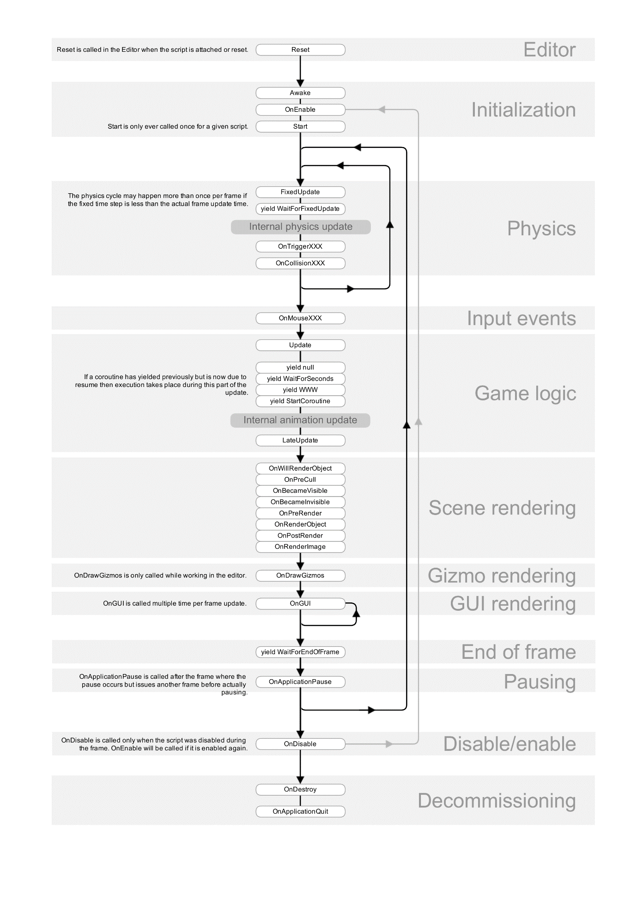

Understanding Unity Script Lifecycle
OnEnable()
OnEnable() is called after the Awake method is executed immediately. It's also called whenever the script gets enabled.
OnApplicationPause(bool)
OnApplicationPause(bool) is called after OnEnable if the script is enabled, and it's called after Awake if the script is not enabled. It returns False whenever a game application comes to the foreground, indicating it's currently running. It returns True whenever a game application goes to the background or switches to another page.
OnApplicationFocus(bool)
OnApplicationFocus(bool) is called immediately after OnApplicationPause. It's also called whenever the game application gains or loses focus. It returns True when the application comes to the foreground and is currently in focus. It returns False when the application goes to the background or loses focus.
Start()
Start() is called after Awake, OnEnable, OnApplicationPause, and OnApplicationFocus It's called only once in a script's lifecycle, and it's executed if the script is enabled.
FixedUpdate()
FixedUpdate() is called after the first frame of the scene is created. It's part of the update and render cycle and is used to determine the object's next state in subsequent frames. It's called after every predefined fixed time interval. The fixed time step can be configured in Edit -> Project Settings -> Time -> Fixed Time Step.
Update()
Update() is called once per frame continuously, according to the frames per second (FPS) rate of the game.
LateUpdate()
LateUpdate() is called once after every Update method call.
OnGUI()
OnGUI() is called many times per frame and is best for drawing GUI elements and handling GUI events. It's used for drawing UI buttons and handling click events.
OnApplicationQuit()
OnApplicationQuit() is called when the user quits the game application. It's also called when the user stops play mode in the Unity editor. Note that when the user quits the game, it first loses focus and then quits the game. This method is best for saving or persisting any game data.
OnDisable()
OnDisable() is called whenever the script gets disabled. You can use System.GC.Collect() to free up unused memory locations.
OnDestroy()
OnDestroy() is called when the object is about to be destroyed. It's called when the current scene ends or is unloaded, after the game application quits, and when the user stops play mode in Unity Editor.